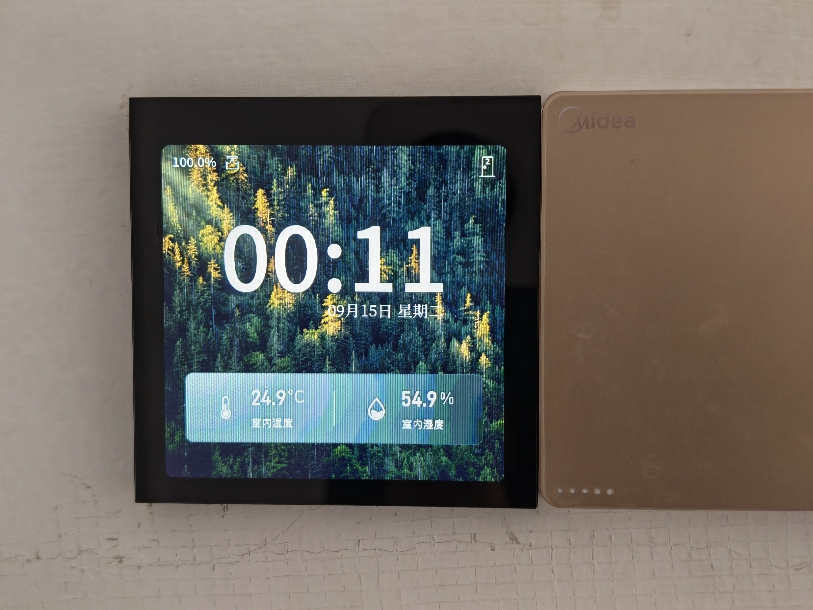
A
从显示到交互
RGB 屏幕、触控驱动与 LVGL 页面，连接实时数据和用户操作。
B
从感知到控制
温湿度采集、PI 调节与除湿接管，驱动 0–10 V 输出。
C
从单机到协同
CAN 房间管理、配置持久化与 BLE OTA，贯穿设备生命周期。
EMBEDDED SYSTEMS / PORTFOLIO
你好，我是王博涵。2027 届硕士
南京邮电大学 · 电子信息。专注嵌入式硬件与固件开发，围绕暖通设备，把电路、传感器、控制算法与工业通信连接起来。
01 / SELECTED WORK
同一个暖通场景，
从设备底层延伸到系统协作。

RGB 屏幕、触控驱动与 LVGL 页面，连接实时数据和用户操作。
温湿度采集、PI 调节与除湿接管，驱动 0–10 V 输出。
CAN 房间管理、配置持久化与 BLE OTA，贯穿设备生命周期。
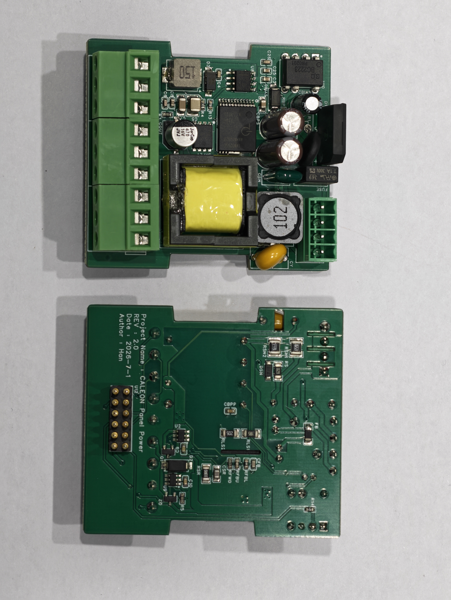
02 / 电源硬件面板电源与接口底板
从电源输入到板间接口，为暖通面板组织供电与信号连接。
查看项目详解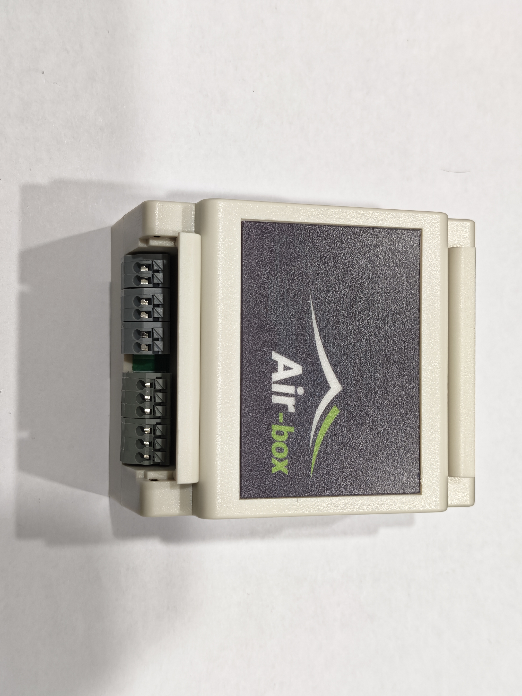
03 / 设备控制新风与风机联动控制
把 CAN 房间状态、环境数据转化为风机与风阀的控制输出。
查看项目详解多区域执行与数据网关
连接区域 B–I 的继电器执行、房间数据缓存与 MQTT 状态上报。
查看项目详解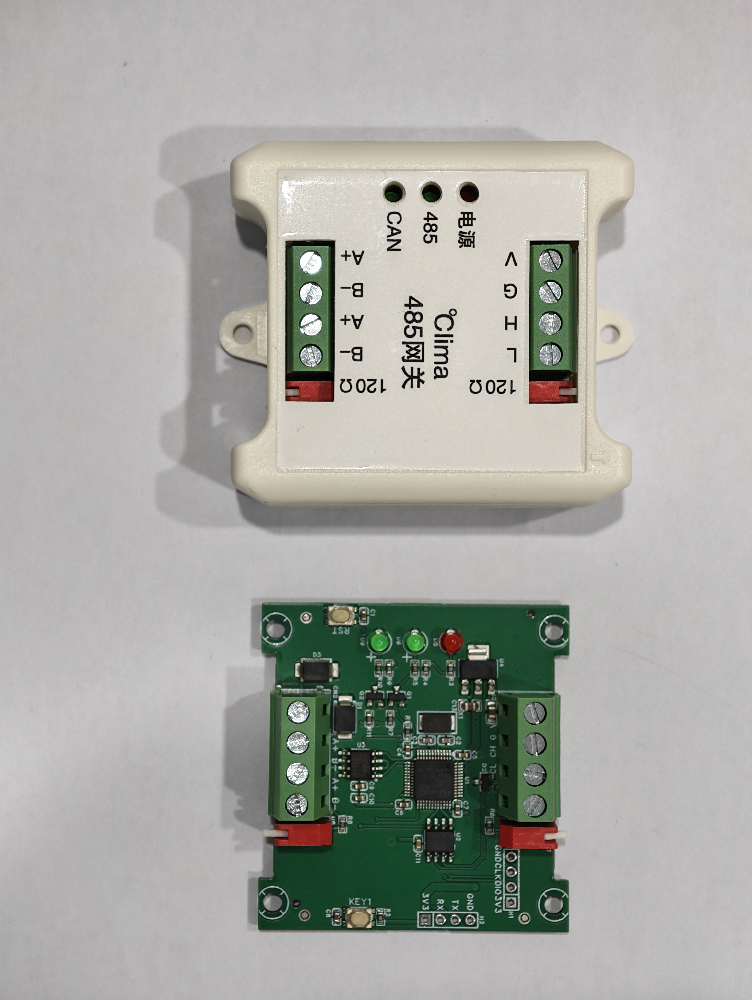
05 / 工业通信CAN ↔ RS-485 协议转换
把暖通 CAN 数据映射成标准 Modbus RTU 寄存器，支持双向对接。
查看项目详解蓝牙配网、调试与固件升级
把设备发现、Wi-Fi 配置、现场调试和 ClimaPanel 蓝牙 OTA 带到微信中。
查看项目详解02 / ENGINEERING PRACTICE
把供电、采集、通信和执行放在同一条链路里考虑，明确模块之间的数据格式与职责。
关注传感器失联、旧数据、通信超时和升级中断，让状态与恢复路径都可以追踪。
通过协议说明、参数定义与调试记录，把项目从“自己能用”推进到“别人能对接”。
03 / ABOUT ME
我喜欢把电路和代码连起来，
把一个功能做成完整的设备。
我的项目围绕暖通控制展开：从电源与接口电路，到 ESP32 / STM32 固件、传感器驱动、控制逻辑、CAN / Modbus 通信，再到触控页面与微信小程序。
PROJECT NOTES
查看每个项目的职责、实现与工程思考。
围绕 ESP32-S3 开发暖通触控控制器。将本机与 CAN 总线房间数据接入同一条控制链路，连接用户设定、温湿度感知与 0–10 V 风机盘管输出。
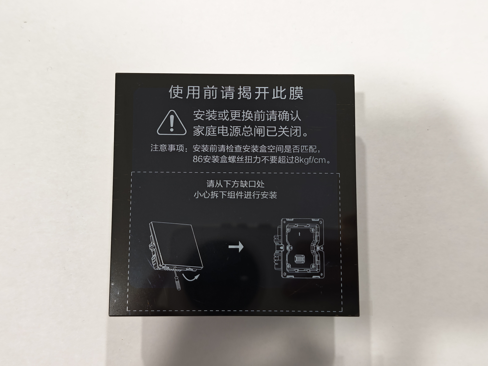
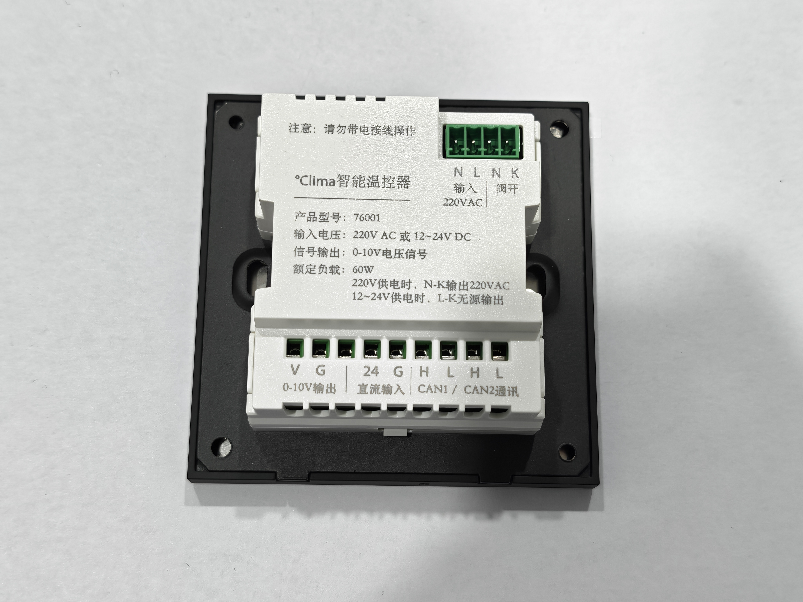
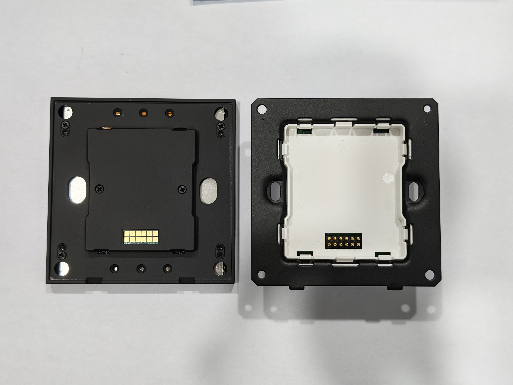
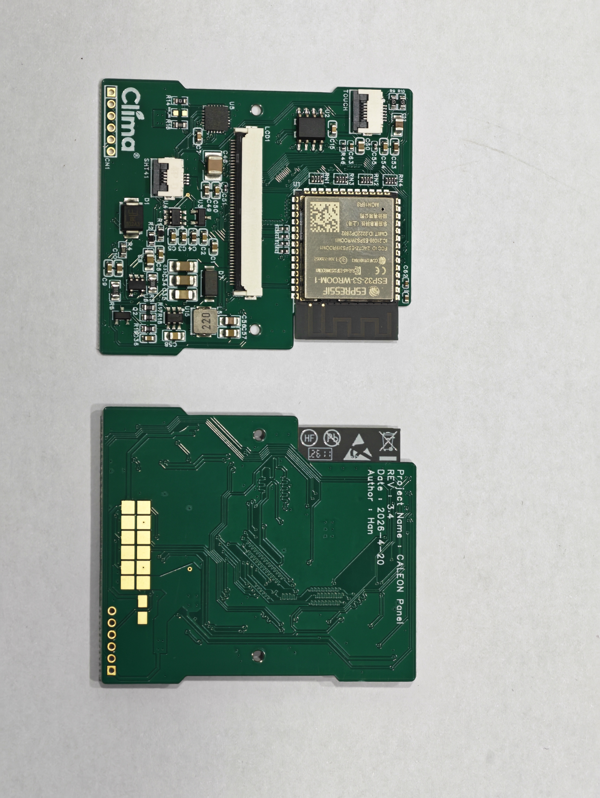
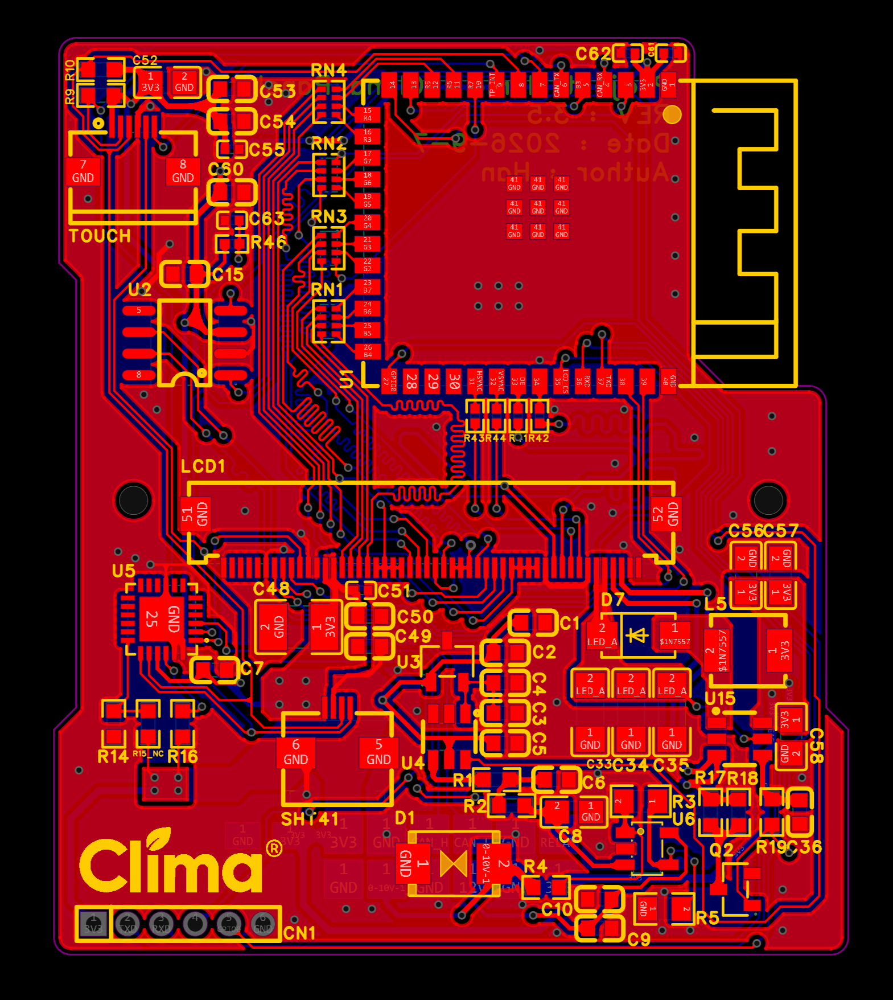
温控采用 PID 框架，当前参数使用 PI（D = 0）。除湿策略为温湿度联动与防过冷控制。
将电源与接口做成独立底板，围绕暖通面板的供电、控制信号和外部连接展开硬件设计。
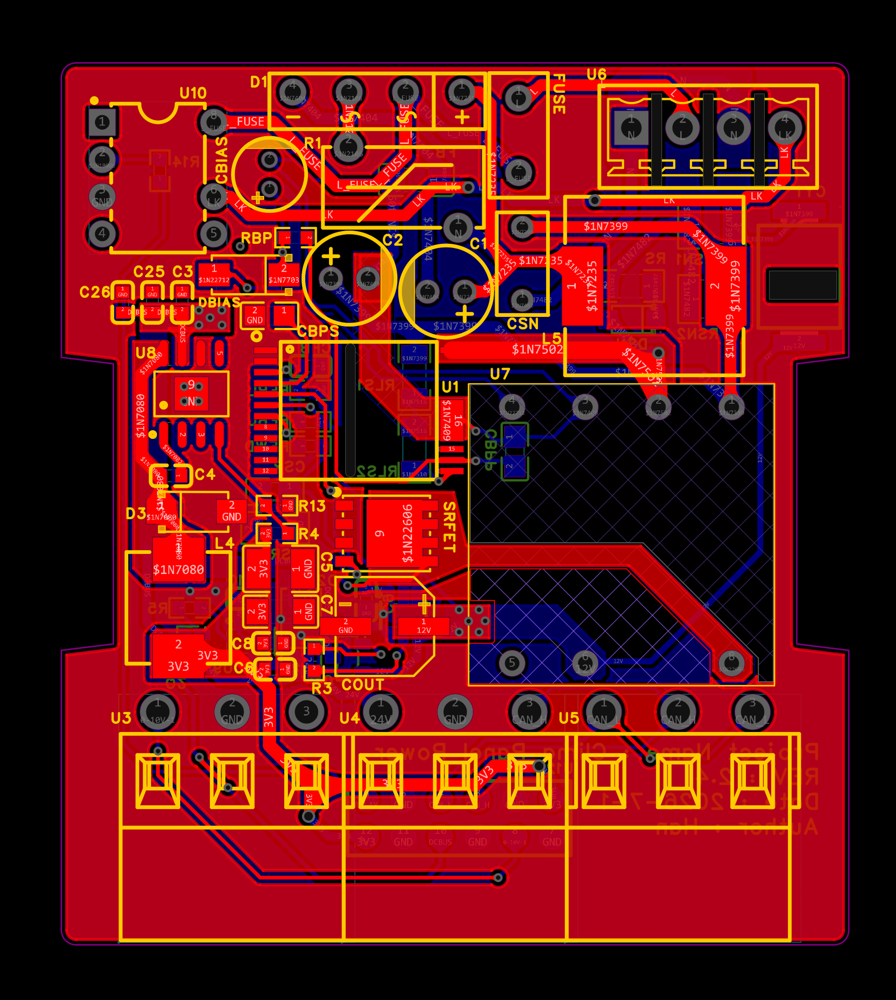
基于 ESP32-S3 组织新风控制流程，接入 CAN 房间状态、CO₂ 信息与温度采集，驱动风机、风阀及相关输出。
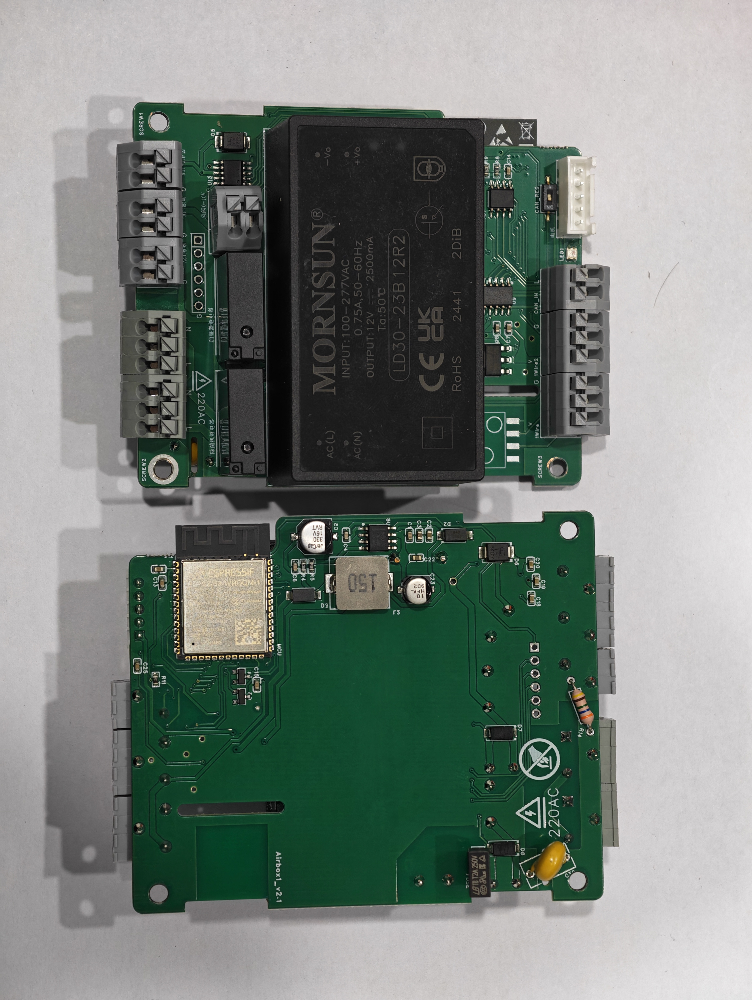
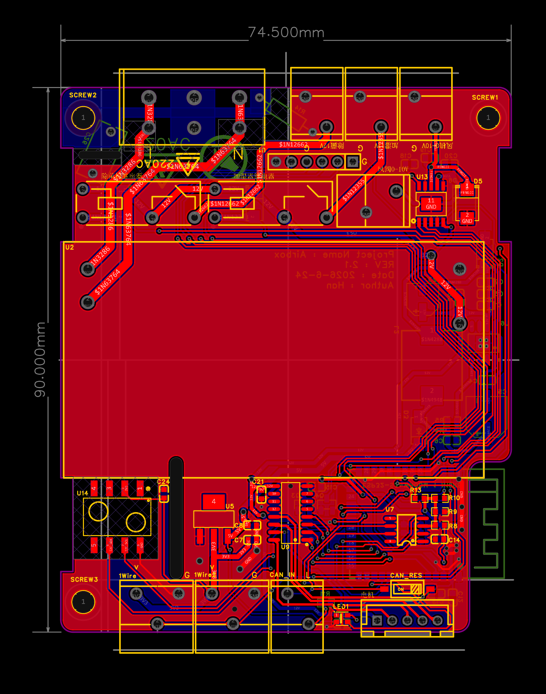
基于 ESP32-S3 实现区域 B–I 的 8 路继电器控制，处理 BOX 配对与 ClimaPanel 直控场景，并为 BLE 配置与 MQTT 上报提供房间数据。
MQTT 上报包含设备状态与房间快照，支持断线后的重新同步。
基于 STM32F103 与 FreeModbus 连接暖通 CAN 系统和 Modbus RTU 上位系统，完成房间状态、温湿度和设定参数的应用层映射。
当前工程使用 9600 8N1。寄存器写入成功和现场执行器动作完成是不同层级的状态。
基于原生微信小程序实现设备近场交互，将 ESP32 端的配网、状态查询与调试协议转化为现场可操作的页面；新版本加入 ClimaPanel BLE OTA 流程。
ClimaPanel OTA 采用带偏移的分片协议，结合 SHA-256 校验与升级进度反馈。
{kind=link}
{kind=link}
{kind=link}
{kind=link}
{kind=link}
{kind=link}
{kind=link}
{kind=link}
{kind=link}
{kind=link}
{kind=link}
{kind=link}